Plan de Trabajo
Servicio Social Estudiantil
| Fecha de inicio de su proyecto: | 16 de febrero de 2026 | Fecha de finalización de su proyecto: | 25 de abril de 2026 |
| Nombre completo: | Francisco Hernández |
| Número de carné: | HM242655 |
| Nombre del proyecto: | Sistema Escolar CEICAVS |
| Cantidad de horas: | 300 |
| Nombre de la institución donde realizó su servicio social: | Centro Escolar Ingeniero Carlos Armando Velásquez Serrano |
| Supervisor de su proyecto en la institución: | Mery Morelia Meléndez de Pineda |
Durante el desarrollo del Sistema Escolar CEICAVS construí una plataforma educativa completa en un monorepo Turborepo + pnpm, con frontend en React 19, Vite y Tailwind CSS v4, y backend en NestJS con GraphQL y Prisma 7. El proyecto me permitió aplicar patrones de ingeniería avanzados que rara vez se abordan en el entorno académico tradicional, trabajando de forma estructurada sobre una base de código real con usuarios reales.
Claude Code y Multi-Agentes: Trabajé con Claude Code mediante un sistema de agentes especializados (backend, frontend, database, testing, review), cada uno con herramientas y conocimiento específico de su dominio. Los agentes se despachaban en paralelo sobre capas independientes del sistema, lo que redujo drásticamente los tiempos de desarrollo y me obligó a pensar en responsabilidades bien delimitadas. Aprendí a redactar especificaciones precisas y a coordinar trabajo complejo de forma estructurada, habilidades directamente transferibles a equipos de ingeniería reales.
Arquitectura CQRS: El backend implementa Command Query Responsibility Segregation: cada escritura tiene su propio CommandHandler y cada lectura su QueryHandler, sin clases de servicio intermedias. Los resolvers de GraphQL son completamente delgados y solo despachan a los buses de comandos y consultas. Los repositorios exigen una transacción activa (tx: TxClient) como parámetro obligatorio en tiempo de compilación, eliminando errores de consistencia de base de datos a nivel de tipos. Esta disciplina me formó en el diseño de sistemas desacoplados, mantenibles y fáciles de probar.
Web Workers y transcripción con Hugging Face: El módulo de transcripción utiliza Web Workers del navegador para ejecutar el modelo Whisper de OpenAI directamente en el cliente mediante Transformers.js, la librería de Hugging Face que porta modelos de machine learning al navegador a través de WebAssembly. Al iniciarse una transcripción, la aplicación instancia un Worker dedicado que descarga los pesos del modelo desde Hugging Face Hub (solo la primera vez), procesa el audio en segmentos y envía resultados parciales al hilo principal mediante postMessage. La interfaz reacciona a cada mensaje mostrando el progreso en tiempo real sin congelar la UI en ningún momento. Adicionalmente, el sistema genera un resumen automático del contenido transcrito usando la API de inteligencia artificial. Este patrón me enseñó a separar el trabajo computacionalmente intenso del hilo principal y a diseñar flujos reactivos basados en mensajería entre hilos.
Base de datos — Prisma 7 + Kysely: La capa de datos combina Prisma 7 como ORM principal (con adaptador PrismaPg que acepta directamente la cadena de conexión sin Pool) y Kysely en modo DummyDriver para construcción de consultas dinámicas de tipo seguro, ejecutadas luego mediante $queryRawUnsafe. Todas las columnas del esquema están en snake_case vía @map()/@@map(), y los modelos sensibles implementan soft delete con deletedAt. Aprendí a distinguir cuándo un ORM es suficiente y cuándo se necesita un query builder para consultas complejas, sin sacrificar la seguridad de tipos.
Diseño de interfaz — shadcn/ui + Tailwind CSS v4: Toda la interfaz se construyó sobre primitivas de shadcn/ui (botones, formularios, diálogos, tablas, sheets, badges, toasts), integrándolas directamente en el código fuente para permitir personalización total. Tailwind CSS v4 provee el sistema de tokens de diseño. Esta disciplina me enseñó a trabajar con design systems maduros y a entregar interfaces accesibles y consistentes. Toda cadena de texto visible al usuario pasa por react-i18next con namespaces por módulo, garantizando una base lista para internacionalización completa.
Gestión del proyecto con Linear: El ciclo de vida del desarrollo se organizó en Linear: cada funcionalidad se registró como issue, se agrupó en proyectos por módulo (asistencia, personas, blog, herramientas, transcripción) y se priorizó en el backlog con estimaciones de esfuerzo. Los milestones marcaron las entregas clave. Trabajar con esta herramienta me introdujo a metodologías ágiles reales, al rastreo de deuda técnica y a la práctica de cerrar issues contra commits concretos.
Impacto institucional: El sistema digitaliza procesos clave del Centro Escolar CEICAVS: control de asistencia por grupo y período, gestión de usuarios y grupos con importación CSV masiva, publicación y moderación de contenido educativo, transcripción automática de clases con resumen generado por IA y acceso a herramientas pedagógicas interactivas (ruleta, temporizador, generador de QR, notas rápidas, calculadora científica, entre otras). Administradores, docentes y estudiantes pasaron de procesos manuales en papel a una plataforma centralizada accesible desde cualquier navegador, con control de acceso por roles que garantiza que cada actor solo vea y opere lo que le corresponde.
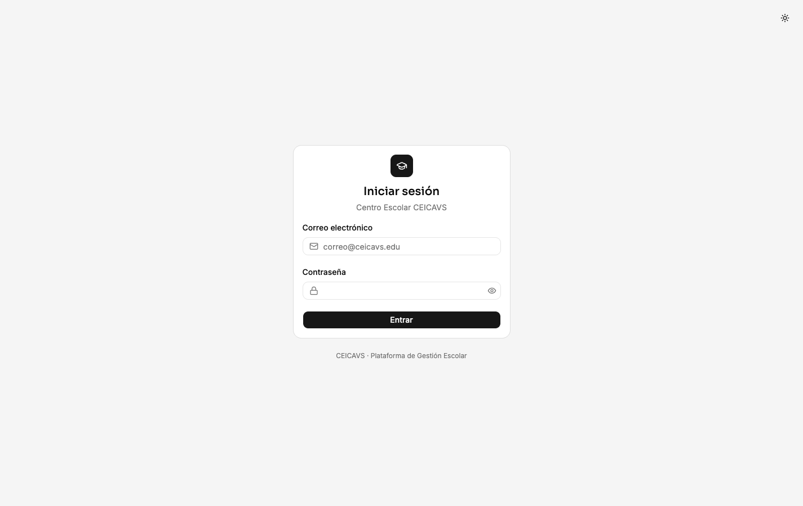
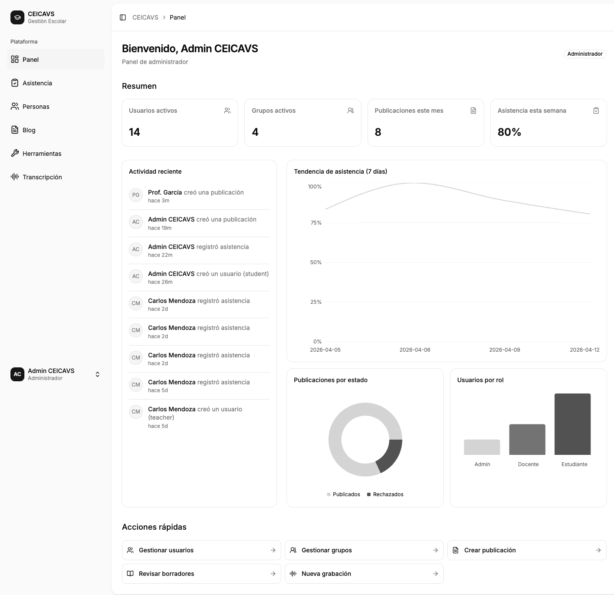
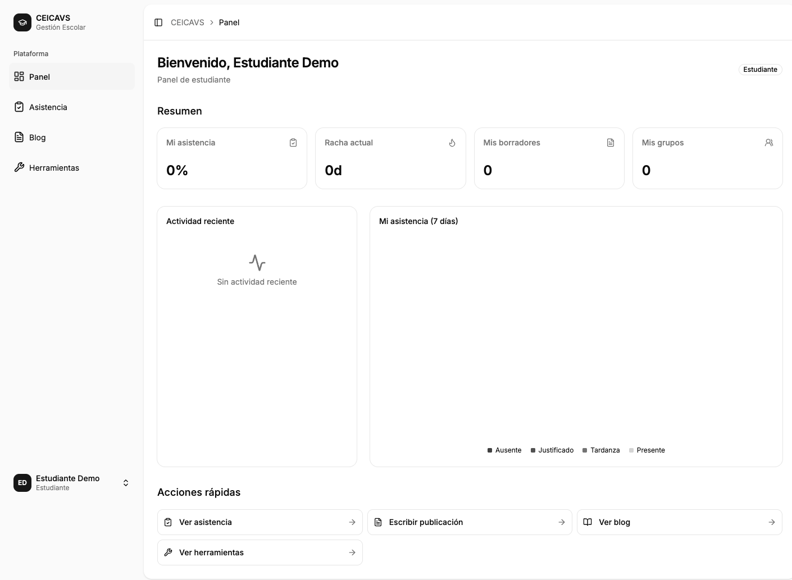
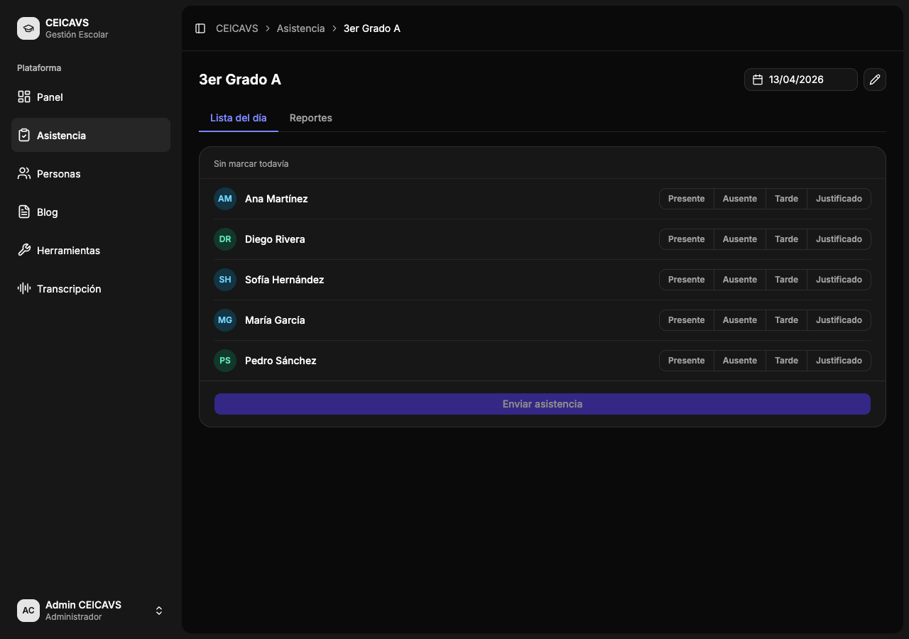
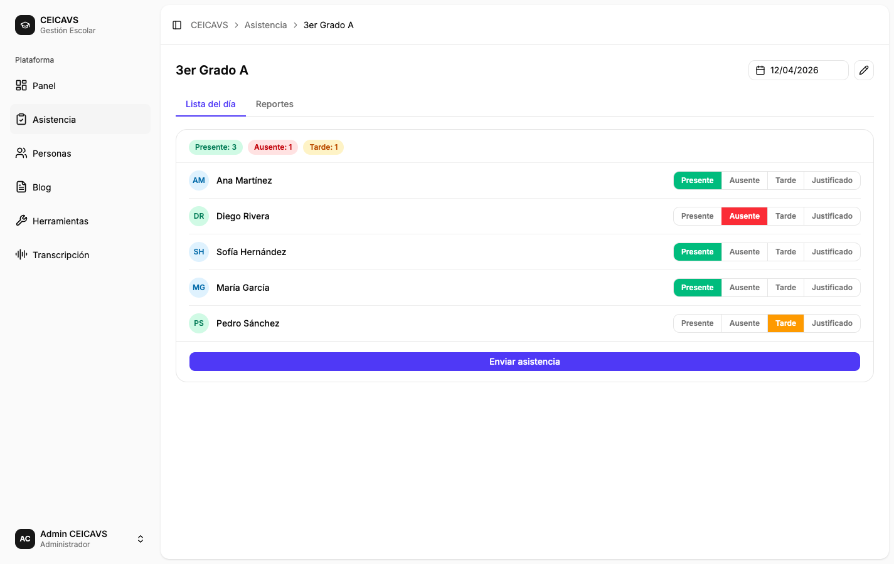
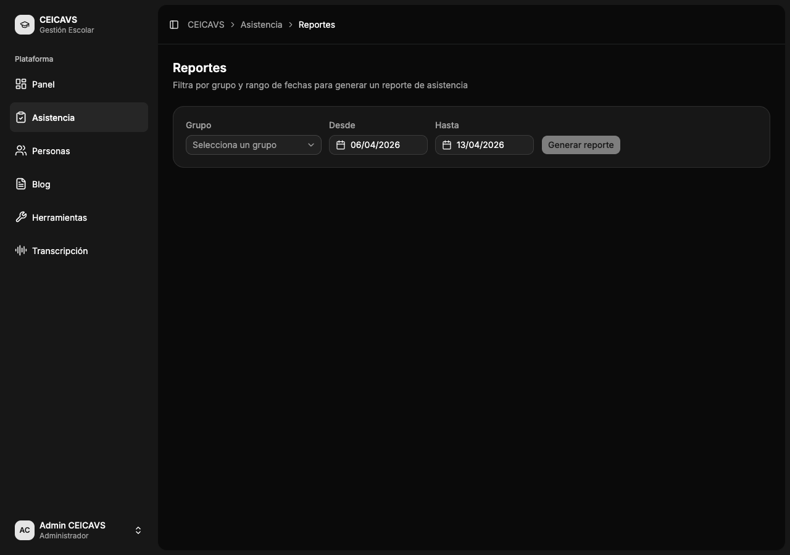
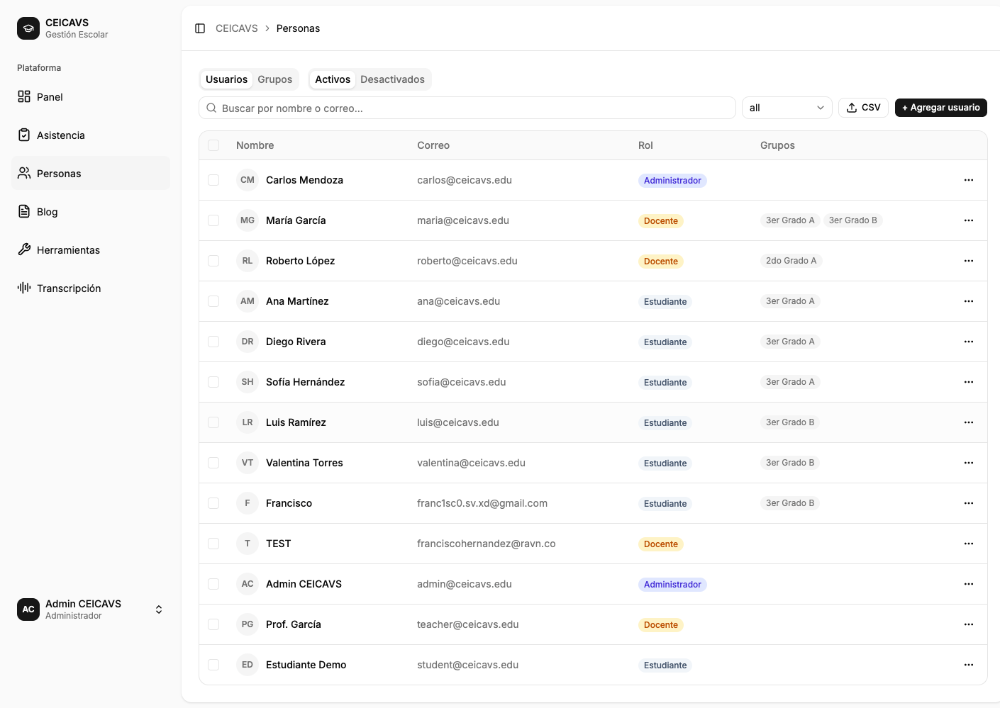
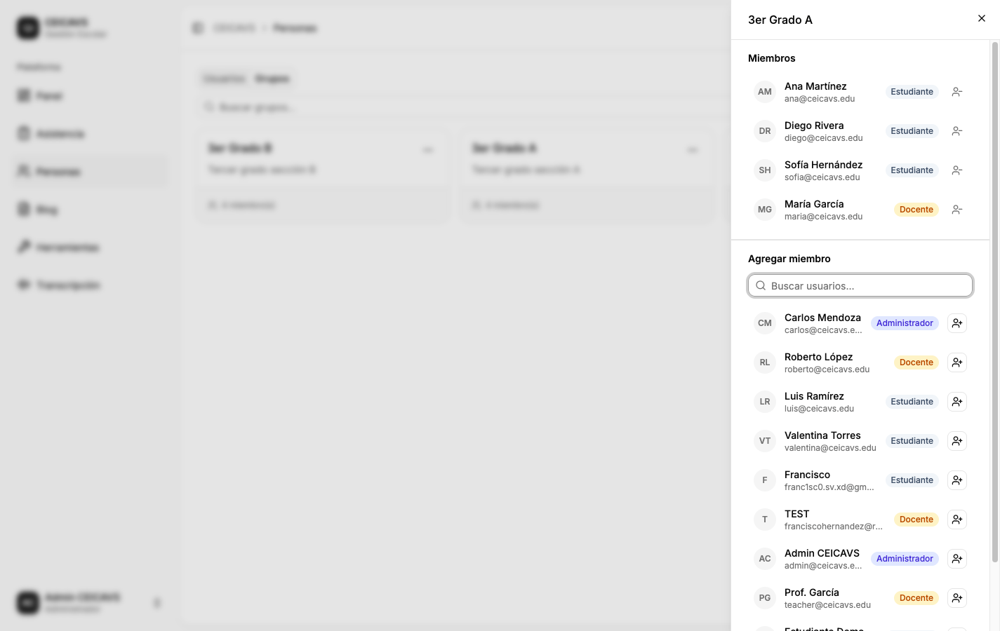
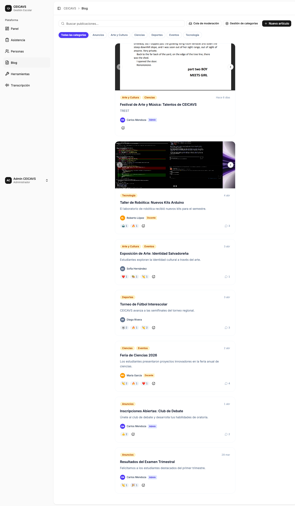
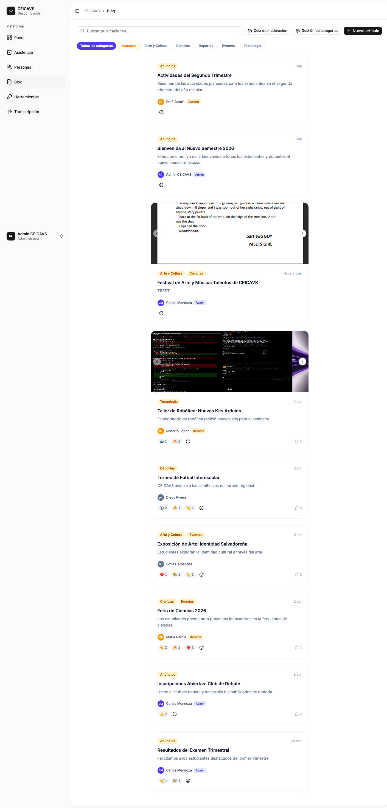
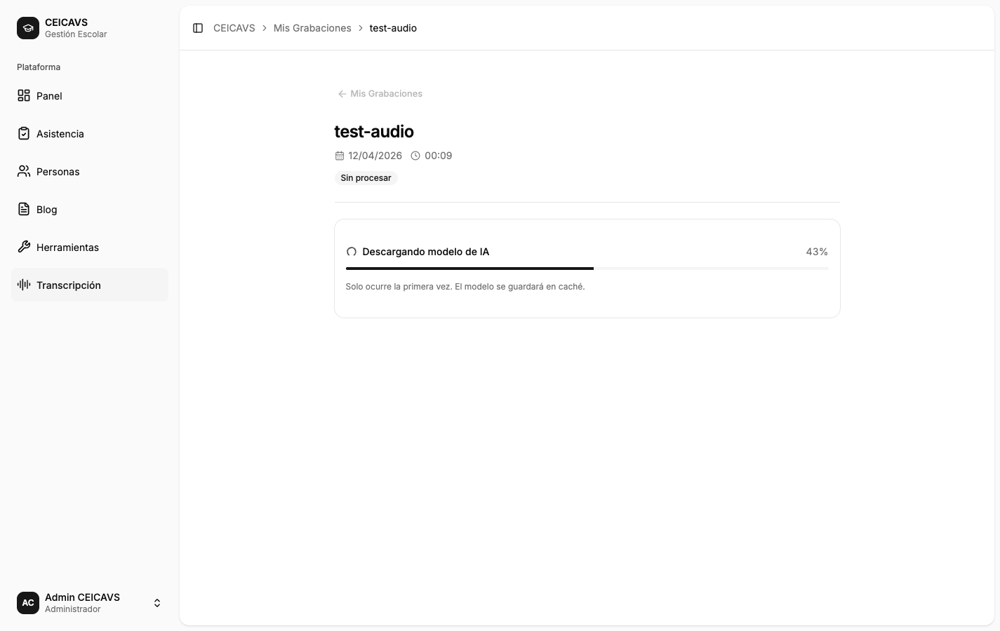
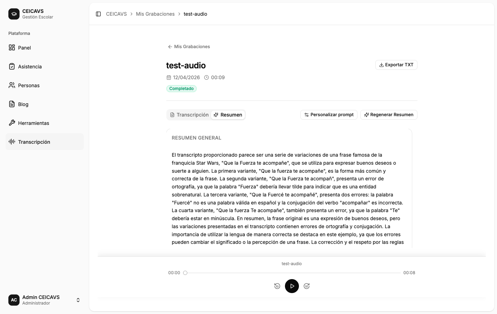
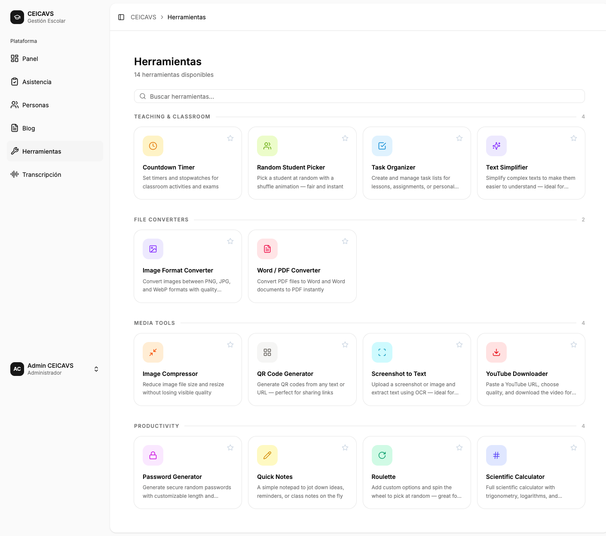
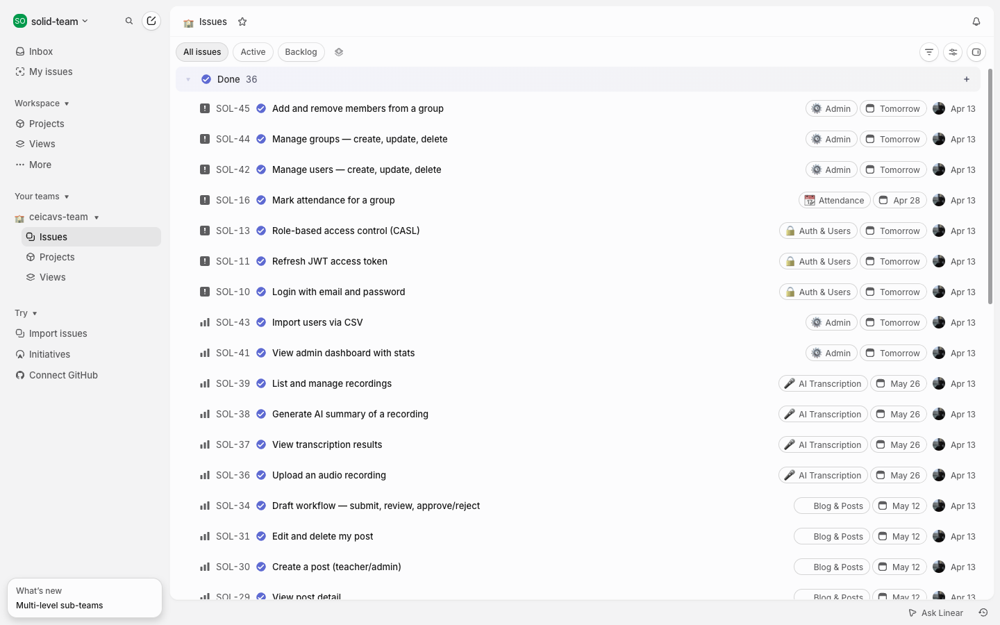